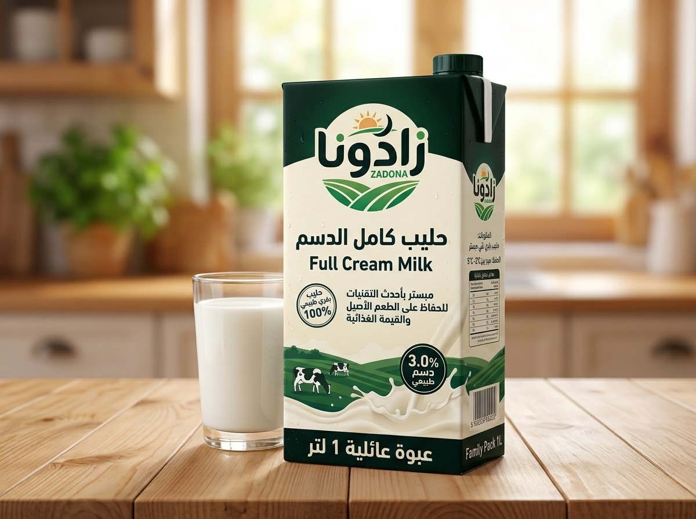
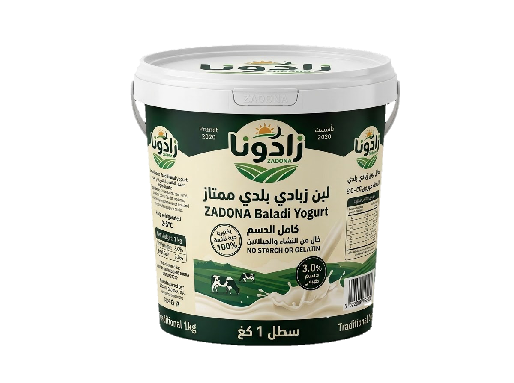
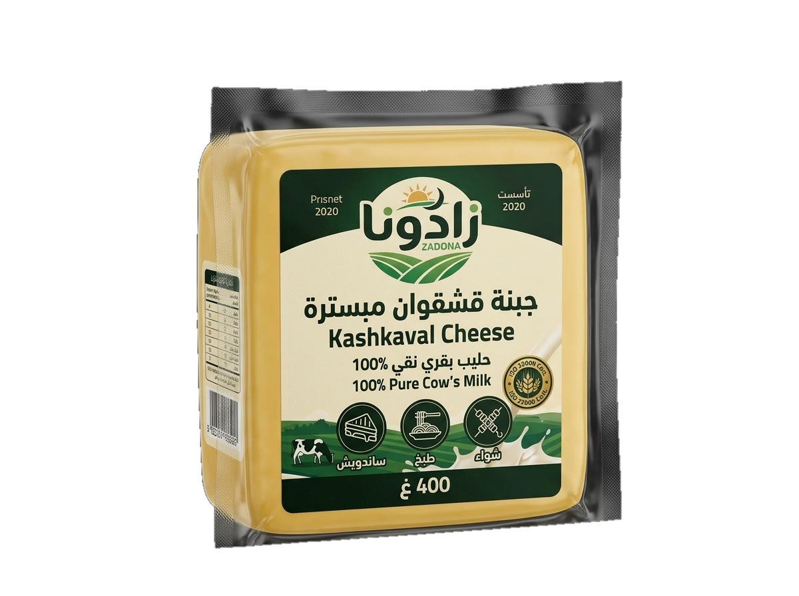
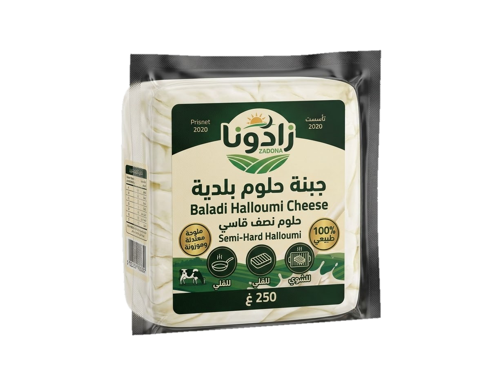
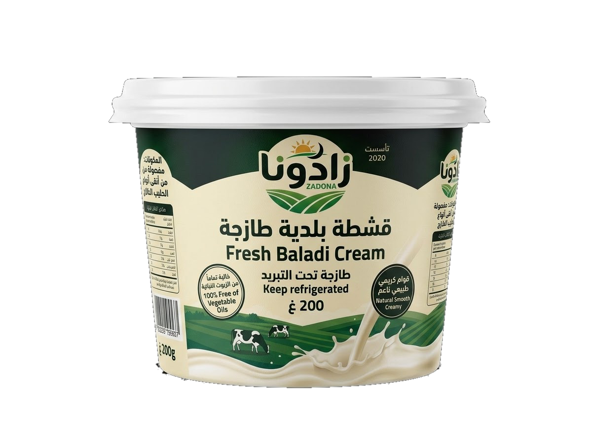
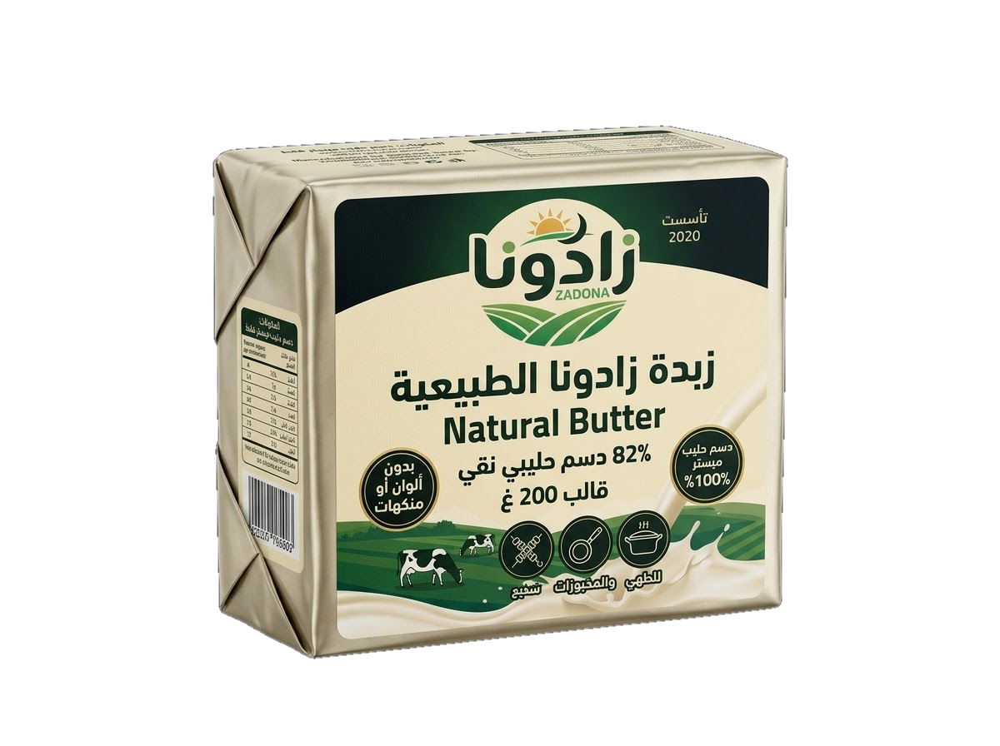

قائمة المنتجات الصناعية
تشكيلة زادونا الفاخرة
نقدم نخبة منتجات الألبان والأجبان الطازجة المشغولة بأعلى درجات النقاء والانضباط الصناعي من مزارعنا إلى مائدتك.
طازج يومياً
حليب

حليب زادونا كامل الدسم
حليب بقري طبيعي 100% مبستر بأحدث التقنيات للحفاظ على الطعم الأصيل والقيمة الغذائية.
التعبئة:عبوة عائلية 1 لتر
نسبة الدسم:3.0% دسم طبيعي
المكونات:حليب بقري نقي مبستر
الحفظ:مبرد بين 2°C - 5°C
قوام متماسك
ألبان

لبن زبادي بلدي ممتاز
مخمر بالبكتيريا الحية النافعة ليعطي نكهة متوازنة وقواماً طبيعياً غنياً دون أي مثبتات صناعية.
التعبئة:سطل 1 كغ / 2 كغ
نسبة الدسم:كامل الدسم
المكونات:حليب طازج + بادئ زبادي
الميزة:خالٍ من النشاء والجيلاتين
جودة تصديرية
أجبان فاخرة

جبنة قشقوان مبسترة
معتقة ومصنعة بحرفية عالية تمنحها طعماً دسماً وملمساً مثالياً للتقطيع والذوبان.
التعبئة:قالب مغلف 400 غ / 1 كغ
المصدر:حليب بقري نقي 100%
الاستخدام:ساندويش، طبخ، شواء
المطابقة:ISO 22000
خاص للشوي
أجبان

جبنة حلوم بلدية
طبقات ناصعة البياض بنكهة الحليب الأصيلة ومرونة ممتازة تحافظ على تماسكها عند الشوي والقلي.
التعبئة:عبوة مفرغة 250 غ
الملوحة:معتدلة وموزونة
المكونات:حليب مبستر، منفحة، ملح
النوع:حلوم نصف قاسي
دسم طبيعي
قشطة وزبدة

قشطة بلدية طازجة
مفصولة من أنقى أنواع الحليب الطازج لتمنح الحلويات والأطباق الصباحية مذاقاً كريمياً فائق الدسامة.
التعبئة:عبوة 200 غ / 500 غ
الخلو:خالية تماماً من الزيوت النباتية
القوام:كريمي طبيعي ناعم
الصلاحية:طازجة تحت التبريد
نقاء 100%
قشطة وزبدة

زبدة زادونا الطبيعية
مخفوقة من دسم الحليب الصافي، بلون كريمي طبيعي ورائحة زكية تناسب الطهي والمخبوزات الفاخرة.
التعبئة:قالب 200 غ / كرتونة 10 كغ
نسبة الدسم:82% دسم حليبي نقي
المكونات:دسم حليب مبستر فقط
الإضافات:بدون ألوان أو منكهات